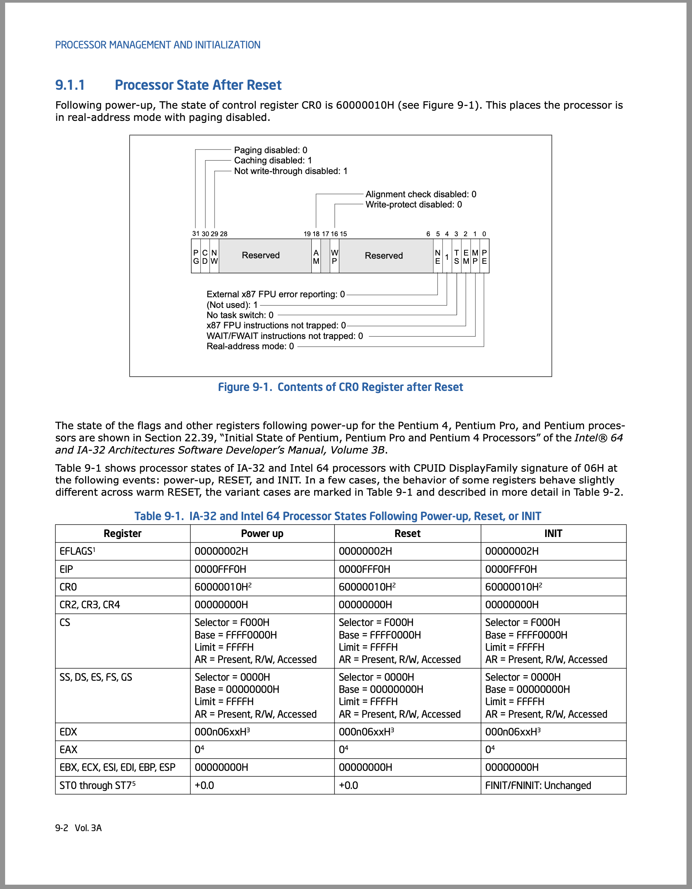
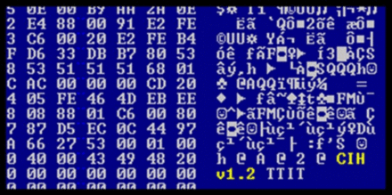

操作系统的状态机模型
Overview
复习
- 并发……就这么……讲完了……
- 理解的方式：“玩一玩” 示例代码
本次课回答的问题
- Q: 听说操作系统也是程序。那到底是鸡生蛋还是蛋生鸡？
本次课主要内容
- 软件和硬件的桥梁
- 操作系统的加载和初始化
- AbstractMachine 代码导读
一、自己动手写操作系统
1、时事热评
- 看到 i386 就知道了嘛
2、本学期的 OSLabs
热身实验
- Lab0 (amgame): 熟悉代码框架
正经实验
- Lab1 (pmm): Physical memory management
- 多处理器 (bare-metal) 上的 kalloc/free
- Lab2 (kmt): Kernel multi-threading
- 中断和异常驱动的上下文 (线程) 切换
- Lab3 (uproc): User processes
- 虚拟地址空间、用户态进程和系统调用
- Lab4 (vfs): Virtual file system
- devfs, procfs, 简单的文件系统；ELF 加载器
3、实现操作系统：到底有多难？
心路历程
- 曾经的我：哇！这也可以？
- 现在的我：哦。呵呵呵。
韩寒：“被小学生支配的恐惧，而我也曾对那种力量，一无所知。”
- 「护球像梅西，射门像贝利」的金山区齐达内，满怀期待地去和儿童预备队比赛，结果被灌了 20 多球。
Bill Gates: 我选择退学。
4、大学的真正意义
将已有的知识和方法重新消化，为大家建立好 “台阶”，在有限的时间里迅速赶上数十年来建立起的学科体系。
今天的学术界可比 Bill Gates 的时代卷多了
- 学术界基本没啥是需要一个毛头小伙子来教的
例子：破除 “写操作系统很难”、“写操作系统很牛” 的错误认识
- 操作系统真的就是个 C 程序
- 你只是需要 “被正确告知” 一些额外的知识
- 然后写代码、吃苦头
- 从而建立正确的 “专业世界观”
5、例子
“专业世界观” 的例子 (这些都没啥，paper 都发不了)
- 写 x86 模拟器的时候，不知道哪条指令错了，怎么办？
- 做操作系统实验的时候，如果遇到神秘 CPU Reset，怎么办？
- 做实验做不下去的时候，该实现什么工具？
“专业世界观” 的学习方法
- 经典研究论文 (OSDI, SOSP, ATC, EuroSys, ...)
- 久经考验的经典教学材料 (xv6, OSTEP, CSAPP, ...)
- 海量的开源工具 (GNU 系列, qemu, gdb, ...)
- 第三方资料，慎用 (tutorials, osdev wiki, ...)
二、硬件和软件的桥梁
1、C 程序
我们已经知道如何写一个 “最小” 的 C 程序了：
- minimal.S
- 不需要链接任何库，就能在操作系统上运行
#include <sys/syscall.h>
.globl _start
_start:
movq $SYS_write, %rax # write(
movq $1, %rdi # fd=1,
movq $st, %rsi # buf=st,
movq $(ed - st), %rdx # count=ed-st
syscall # );
movq $SYS_exit, %rax # exit(
movq $1, %rdi # status=1
syscall # );
st:
.ascii "\033[01;31mHello, OS World\033[0m\n"
ed:
$ gcc -c minimal.S
$ ld minimal.o
$ file a.out
a.out: ELF 64-bit LSB executable, x86-64, version 1 (SYSV), statically linked, not stripped
$ objdump -d a.out | less
$ ./a.out
Hello, OS World
$ gdb a.out
(gdb) starti
“程序 = 状态机” 没问题
- 带来更多的疑问
- 但谁创建的这个状态机？？？
- 当然是操作系统了……呃……
- 这个程序可以在没有操作系统的硬件上运行吗？
- “启动” 状态机是由 “加载器” 完成的
- 加载器也是一段程序 (状态机)
- 这个程序由是由谁加载的？
2、Bare-metal 与程序员的约定
为了让计算机能运行任何我们的程序，一定存在软件/硬件的约定
- CPU reset 后，处理器处于某个确定的状态
- PC 指针一般指向一段 memory-mapped ROM
- ROM 存储了厂商提供的 firmware (固件)
- 处理器的大部分特性处于关闭状态
- 缓存、虚拟存储、……
- Firmware (固件，厂商提供的代码)
- 将用户数据加载到内存
- 例如存储介质上的第二级 loader (加载器)
- 或者直接加载操作系统 (嵌入式系统)
3、x86 Family: CPU Reset 行为
CPU Reset (Intel® 64 and IA-32 Architectures Software Developer’s Manual, Volume 3A/3B)
- 寄存器会有初始状态
EIP = 0x0000fff0CR0 = 0x60000010- 16-bit 模式
EFLAGS = 0x00000002- interrupt disabled
- TFM (5,000 页 by 2019)
- 最需要的 Volume 3A 只有 468 页

4、CPU Reset 之后：发生了什么？
《计算机系统基础》：不仅是程序，整个计算机系统也是一个状态机
- 从 PC (
CS:IP) 指针处取指令、译码、执行…… - 从 firmware 开始执行
ffff0通常是一条向 firmware 跳转的 jmp 指令
Firmware: BIOS vs. UEFI
- 都是主板/主板上外插设备的软件抽象
- 支持系统管理程序运行
- Legacy BIOS (Basic I/O System)
- UEFI (Unified Extensible Firmware Interface)

5、Legacy BIOS: 约定
Firmware 必须提供机制，将用户数据载入内存
- Legacy BIOS 把第一个可引导设备的第一个扇区加载到物理内存的
7c00位置 - 此时处理器处于 16-bit 模式
- 规定
CS:IP = 0x7c00,(R[CS] << 4) | R[IP] == 0x7c00- 可能性1：
CS = 0x07c0, IP = 0 - 可能性2：
CS = 0, IP = 0x7c00
- 可能性1：
- 其他没有任何约束
6、能不能看一下代码？
Talk is cheap. Show me the code. ——Linus Torvalds
有没有可能我们真的去看从 CPU Reset 以后每一条指令的执行？
计算机系统公理：你想到的就一定有人做到。
- 模拟方案：QEMU
- 传奇黑客、天才程序员 Fabrice Bellard 的杰作
- QEMU, A fast and portable dynamic translator (USENIX ATC'05)
- Android Virtual Device, VirtualBox, ... 背后都是 QEMU
- 真机方案：JTAG (Joint Test Action Group) debugger
- 一系列 (物理) 调试寄存器，可以实现 gdb 接口 (!!!)
7、调试 QEMU: 确认 Firmware 的行为
亲眼确认 Firmware 到底是不是会加载启动盘第一个扇区到 0x7c00 内存位置！
调试 QEMU 模拟器
- 查看 CPU Reset 后的寄存器
info registers- 查看
0x7c00内存的加载 watch *0x7c00- 《计算机系统基础》的良苦用心- 查看当前指令
x/i ($cs * 16 + $rip) - 打印内存
x/16xb 0x7c00 - 进入
0x7c00代码的执行 b *0x7c00, c(撒花！我们一会再回来)
8、鸡和蛋的问题解决
有个原始的鸡：Firmware
- 代码直接存在于硬件里
- CPU Reset 后 Firmware 会执行
- 加载 512 字节到内存 (Legacy Boot)
- 然后功成身退
Firmware 的另一用处
- 放置一些 “绝对安全的代码”
- BIOS 中断 (Hello World 是如何被打印的)
- ARM Trusted Firmware
- Boot-Level 1, 2, 3.1, 3.2, 3.3
- U-Boot: the universal boot loader
9、小插曲：Firmware 的病毒 (1998)
Firmware 通常是只读的 (当然……)
- Intel 430TX (Pentium) 芯片组允许写入 Flash ROM
- 只要向 Flash BIOS 写入特定序列，Flash ROM 就变为可写
- 留给 firmware 更新的通道
- 要得到这个序列其实并不困难
- 似乎文档里就有 🤔 Boom……
CIH 的作者陈盈豪被逮捕，但并未被定罪

10、今天的 Firmware: UEFI
IBM PC 所有设备/BIOS 中断是有 specification 的 (成就了 “兼容机”)
- 今天的 boot loader 面临麻烦得多的硬件：
- 指纹锁、不知名厂商生产网卡上的网络启动、USB 上的蓝牙转接器连接的蓝牙键盘、……

11、UEFI 上的操作系统加载
标准化的加载流程
- 盘必须按 GPT (GUID Partition Table) 方式格式化
- 预留一个 FAT32 分区 (lsblk/fdisk 可以看到)
- Firmware 加载任意大小的 PE 可执行文件
.efi - 没有 legacy boot 512 字节限制
- EFI 应用可以返回 firmware
更好的程序支持
- 设备驱动框架
- 更多的功能，例如 Secure Boot，只能启动 “信任” 的操作系统
三、操作系统的状态机模型
【1:05:20】开始往后看，很重要
1、“操作系统” 的状态机已经启动
Firmware 和 boot loader 共同完成 “操作系统的加载”
- 初始化全局变量和栈；分配堆区 (
heap) - 为
main函数传递参数 - 谁给操作系统传递了参数？
- 如何实现参数传递？
进入 C 代码之后
- 完全遵循 C 语言的形式语义
- 但有一些行为 “补充” —— AbstractMachine API
2、操作系统：是个 C 程序
一个迷你 “操作系统” thread-os.c，很重要
- make 会得到一个 “磁盘镜像”，好像魔法一样
- 就跟你们第一次用 IDE 的时候按一个键就可以编译运行一样
#include <am.h>
#include <klib.h>
#include <klib-macros.h>
#define MAX_CPU 8
typedef union task {
struct {
const char *name;
union task *next;
void (*entry)(void *);
Context *context;
};
uint8_t stack[8192];
} Task;
Task *currents[MAX_CPU];
#define current currents[cpu_current()]
// user-defined tasks
int locked = 0;
void lock() { while (atomic_xchg(&locked, 1)); }
void unlock() { atomic_xchg(&locked, 0); }
void func(void *arg) {
while (1) {
lock();
printf("Thread-%s on CPU #%d\n", arg, cpu_current());
unlock();
for (int volatile i = 0; i < 100000; i++) ;
}
}
Task tasks[] = {
{ .name = "A", .entry = func },
{ .name = "B", .entry = func },
{ .name = "C", .entry = func },
{ .name = "D", .entry = func },
{ .name = "E", .entry = func },
};
// ------------------
Context *on_interrupt(Event ev, Context *ctx) {
extern Task tasks[];
if (!current) current = &tasks[0];
else current->context = ctx;
do {
current = current->next;
} while ((current - tasks) % cpu_count() != cpu_current());
return current->context;
}
void mp_entry() {
iset(true);
yield();
}
int main() {
cte_init(on_interrupt);
for (int i = 0; i < LENGTH(tasks); i++) {
Task *task = &tasks[i];
Area stack = (Area) { &task->context + 1, task + 1 };
task->context = kcontext(stack, task->entry, (void *)task->name);
task->next = &tasks[(i + 1) % LENGTH(tasks)];
}
mpe_init(mp_entry); // 把单线程的C程序编程多程序的C程序
}
3、AbstractMachine 对 “C 程序语义” 做出的扩充
TRM + MPE
- 完全等同于多线程 (处理器相当于线程) - L1/native
- IOE API: 完全是普通的库函数
- 同一设备的数据竞争 = undefined behavior
CTE，中断
- 允许创建多个执行流 (类比协程) - M2
- yield 主动切换；会被中断被动打断
on_interrupt会拦截到中断事件
VME，虚拟内存
- 允许创建一个 “经过地址翻译的执行模式”
- 通过 CTE API 管理
四、RTFSC 时间
0、生成镜像和启动虚拟机
如果使用 “土办法”，你很可能被淹没在 Makefile 中
- 读懂 Makefile 需要 STFW, RTFM，大量的精力
- 虽然花点时间读是值得的，但很可能读了很久都没读到重要的地方
花一点时间想 “应该怎么做”
- 花几分钟创建一个小工具：“AbstractMachine 构建理解工具”
- UNIX Philosophy: keep it simple, stupid
- everything is a file; write things to work together using text interface
- Get out of your comfort zone
如果想要知道操作系统是怎样运行的，该怎么办？
是一行行看代码，还是用 gdb 调式它，当然用 gdb 调式它
观察 AbstractMachine 程序编译过程的正确方法：
make -nB \
| grep -ve '^\(\#\|echo\|mkdir\|make\)' \
| sed "s#$AM_HOME#\$AM_HOME#g" \
| sed "s#$PWD#.#g" \
| vim -
- Command line tricks
make -nB(RTFM)- grep: 文本过滤，省略了一些干扰项
- echo (提示信息), mkdir (目录建立), make (sub-goals)
- sed: 让输出更易读
- 将绝对路径替换成相对路径
- vim: 更舒适的编辑/查看体验
想要看得更清楚一些？
:%s/ /\r /g- 每一个命令就像 “一句话”
编译
-std=gnu11,m64,-mno-sse,-I,-D, ... (这对你配置 vscode 很重要)
链接
-melf_x86_64,-N,-Ttext-segment=0x00100000- 链接了需要的库 (
am-x86_64-qemu.a,klib-x86_64-qemu.a)
彩蛋
make html
1、启动加载器 (Boot Loader)
512 字节中的代码，假设了镜像格式 (真正的的加载器有很多 stages)
- 16-bit → 32-bit
- ELF32/64 的加载器
- 按照约定的磁盘镜像格式加载
代码讲解：
am/src/x86/qemu/boot/start.S和main.c- 它们都可以调试！
if (elf32->e_machine == EM_X86_64) {
((void(*)())(uint32_t)elf64->e_entry)();
} else {
((void(*)())(uint32_t)elf32->e_entry)();
}
总结
本次课回答的问题
- Q: 操作系统也是程序，它如何用状态机如何定义？
Take-away message
- 一切皆可调试 (包括 firmware)
- 理解操作系统是如何被启动的
- 学会使用 gdb (必备生存技能)
- 操作系统也是程序
- AbstractMachine 扩展了程序的语义，仅此而已